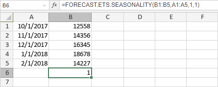

FORECAST.ETS.SEASONALITY Funkcija
FORECAST.ETS.SEASONALITY funkcija je jedna od statističkih funkcija. Koristi se za vraćanje dužine ponavljajućeg obrasca koji aplikacija detektuje za određeni vremenski niz.
Sintaksa
FORECAST.ETS.SEASONALITY(values, timeline, [data_completion], [aggregation])
FORECAST.ETS.SEASONALITY funkcija ima sledeće argumente:
| Argument | Opis |
|---|---|
| values | Opseg istorijskih vrednosti za koje želite da predvidite novu tačku. |
| timeline | Opseg datuma/vremenskih vrednosti koji odgovaraju istorijskim vrednostima. Opseg timeline mora biti iste veličine kao opseg values. Datumske/vremenske vrednosti moraju imati konstantan korak između njih (iako do 30% nedostajućih vrednosti može biti obrađeno kako je određeno argumentom data_completion i duplikati mogu biti agregirani kao što je određeno argumentom aggregation). |
| data_completion | Numerička vrednost koja određuje kako se obrađuju nedostajući podaci u opsegu timeline. Ovo je opcioni argument. Moguće vrednosti su navedene u tabeli ispod. |
| aggregation | Numerička vrednost koja određuje koja funkcija će se koristiti za agregiranje identičnih vremenskih vrednosti u opsegu timeline. Ovo je opcioni argument. Moguće vrednosti su navedene u tabeli ispod. |
Argument data_completion može biti jedan od sledećih:
| Numerička vrednost | Ponašanje |
|---|---|
| 1 ili izostavljeno | Nedostajući podaci se izračunavaju kao prosečna vrednost susednih tačaka. |
| 0 | Nedostajući podaci se tretiraju kao nule. |
Argument aggregation može biti jedan od sledećih:
| Numerička vrednost | Funkcija |
|---|---|
| 1 ili izostavljeno | AVERAGE |
| 2 | COUNT |
| 3 | COUNTA |
| 4 | MAX |
| 5 | MEDIAN |
| 6 | MIN |
| 7 | SUM |
Napomene
Kako primeniti FORECAST.ETS.SEASONALITY funkciju.
Primeri
Slika ispod prikazuje rezultat koji vraća FORECAST.ETS.SEASONALITY funkcija.
